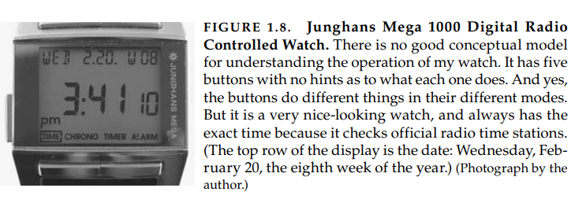
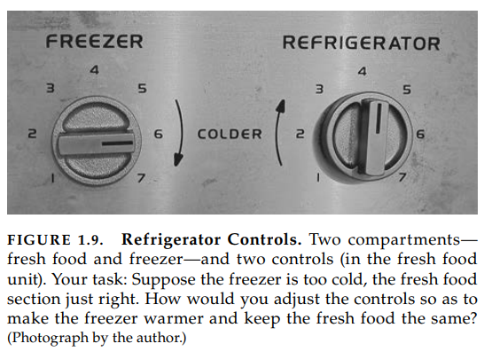
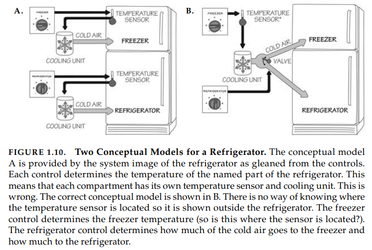
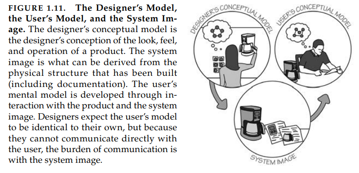

Aula 9 (2019-05-19)
Modelos Conceituais
Um modelo conceitual é uma explicação, geralmente bastante simplificado, de como as coisas são. Ele não precisa ser completo ou até preciso ao passo que seja útil.
Arquivos, diretórios e ícones que vemos no computador/smartphones ajudam criar o modelo conceitual de documentos e diretórios dentro desses dispositivos, que estão sendo mostrado na tela. Na verdade não existe diretórios dentro the um computador — eles são conceitualizações efetivas projetadas para serem fáceis de usar.
Modelos conceituais encontrados em manuais técnicos e livros para uso técnico podem ser detalhados e complexos. Aqueles que estamos preocupados são mais simples: eles estão nas mentes das pessoas que estão usando o produto, logo eles também são "modelos mentais", os quais são modelos conceituais que estão na mente das pessoas que representam o entendimento delas de como as coisas funcionam.
Modelos conceituais são geralmente inferidos a partir do próprio dispositivo. Alguns modelos são passados de pessoa para pessoa. Alguns vêm com manuais. Geralmente o dispositivo oferece muito pouca assistência, logo o modelo é construído por experiência. Muitas vezes esses modelos são errôneos e portanto levam a dificuldade de usar o dispositivo.
Uma tesoura: podemos ver que a quantidade de ações são limitadas. Os buracos claramente indicam que podemos colocar algo dentro, e a única coisa lógica será os dedos.
Os buracos são ambos "conformidades" — eles permitem os dedos serem colocados — e "significadores" — eles indicam onde os dedos devem ir. O tamanho indica restrições para limitar a quantidade de dodos (ou tamanho deles). O mapeamento entre os buracos e dedos é significado e restringido pelos buracos. Podemos descobrir o funcionamento da tesoura devido as suas partes operacionais que estão visíveis e as implicações são claras. O modelo conceitual é obvio e existe o uso efetivo de significadores, conformidades e restrições.

O relógio não provê nenhuma relação entre botões e quais possíveis ações, nenhuma relação entre ações e os resultados finais.
Os modelos conceituais tem valor ao providenciar entendimento, predição de como as coisas irão se comportar e descobrimento do que fazer quando as coisas não funcionam como planejado. Um bom modelo conceitual nos permite prever quais efeitos de nossas ações. Sem um bom modelo, nós operamos por hábito, as cegas. Nós operamos como nos disseram para operar, não aprecisamos por completo, não sabemos quais efeitos esperar ou o que fazer quando as coisas dão erradas.
Para as coisas do dia a dia, modelos conceituais não precisam ser muito complexos. Tesouras, canetas e tomadas são simples dispositivos. Não é preciso entender a física ou química por baixo de cada dispositivo que temos, apenas o relacionamento entre os controles e os resultados. Quando o modelo apresentado é inadequado ou errado podemos ter dificuldade.
Portanto cuidado com os "smart devices". Para não complicar em demasia o que já é inerentemente é simples!

Os controles sugerem um modelo conceitual falso. Dois compartimentos, dois controles, o que implica que cada controle é responsável pelos seus respectivos compartimentos nomeados. Está errado. Na verdade, existe apenas um termostato, e apenas uma forma de resfriamento. Um controle ajusta a configuração do termostato e o outro a porção relativa de ar frio enviado para cada um dos dois compartimentos do refrigerador.

Talvez os designers pensaram que o modelo conceitual correto era muito complexo, e que o modelo que eles proveram era mais fácil de entender. Mas com o modelo conceitual errado, era impossível configurar os controles. E mesmo sabendo do problema do modelo conceitual e sabendo como de fato ele é, é muito difícil ajustar as temperaturas devido ao projeto do refrigerador. Não da pra saber qual controle ajusta a temperatura, e qual direciona a porção de ar fio, e em qual compartimento o sensor está colocado.
A falta de feedback imediato para as ações não ajudam: leva 24h para ver se as novas configurações são apropriadas.
Imagem do sistema
Pessoas criam modelos mentais delas mesmas, outros, ambiente, e coisas com as quais nós interagimos. Estes modelos conceituais formados pela experiência, treinamento e instruções. Estes modelos servem de guia para ajudar alcançar nossos objetivos e no entendimento do mundo.
Como nós formamos um modelo conceitual apropriado dos dispositivos que nós interagimos? Não podemos conversar com os designers, então nós dependemos de qualquer informação disposta para nós: como o que o dispositivo parece, o que nós sabemos de usar coisas parecidas no passado, o que foi dito para nós nas lojas pelo vendedores, propagandas e documentos que lemos, etc.
Essas informações disponíveis combinadas é a "imagem do sistema". Quando a imagem do sistema é incoerente ou inapropriada, como no caso do refrigerador, o usuário não consegue usar facilmente o dispositivo.

O modelo conceitual do designer é o modelo conceitual do produto. O próprio produto não está mais com o designer quando o produto é entregue/vendido. A "imagem do sistema" é o que é percebido da estrutura física que foi construído (incluindo documentação, instruções, significadores e qualquer informação disponível).
O modelo conceitual do usuário vem da "imagem do sistema", pela interação com o produto, leitura, pesquisa por informações e qualquer manual. O designer espera que o modelo do usuário seja idêntico ao dele, porém designer não podem se comunicar diretamente com os usuários, todo o peso de comunicação está sobre a imagem do sistema.
O objetivo é que o modelo conceitual feito pelo designer seja o mais próximo da imagem do sistema criada pelo usuário.
Comunicação é um aspecto muito importante de bom design. Não importa o quão brilhante o produto é, se as pessoas não puderem usá-las irá receber baixa pontuação. É dever do designer prover a informação apropriada para construir o produto entendível e usável. O mais importante é formar um bom modelo conceitual que guia o usuário quando as coisas dão erradas. Com um bom modelo conceitual, pessoa podem descobrir o que aconteceu e corrigir as coisas que dão erradas. Sem um bom modelo, as pessoas brigam, tornando as coisas piores.
O Paradoxo da tecnologia
Tecnologia oferece o potencial para tornar as coisas fáceis e mais agradáveis; cada nova tecnologia provê mais benefícios. Ao mesmo tempo, adição de complexidades aumentam nossa dificuldade e frustrações com tecnologia. Os problemas presentes de design pelos avanços tecnológicos são enormes.
Um relógio de pulso décadas atrás eram dispositivos simples. Tudo que tínhamos que fazer era configurar o horário. O único controle era um nós ao lado do relógio, ao girá-lo acertávamos a hora. E existia um mecanismo de segurança, em que era necessário puxar o nó para regular a hora, e pressionar o nó para que girar o nó não causasse nada.
Relógios eram muito caros, feitos a mão (relógio suíço), vendidos em joalherias. Com o advento de relógios digitais, o custo diminuiu, enquanto sua precisão e confiança aumentou!
Só que as novas funções adicionaram problemas: como fazer caber todas funções adicionais em um dispositivo tão pequeno? Não tem resposta simples. Algumas pessoas desistiram dos relógios, ao usar os celulares por exemplo, que fazem todas essas funções adicionais (contatos por exemplo) muito melhor.
A mesma tecnologia que simplifica a vida ao prover mais funções em um mesmo dispositivo também complica a vida ao fazer o dispositivo mais difícil de se aprender e de se usar. Este é o paradoxo da tecnologia e os desafios para os designers.
O desafio de design
Projeto precisa de esforço coperativo de múltiplas disciplinas. Grandes projetos precisam de grandes projetistas, mas não é suficiente: é preciso ótimo gerenciamento, porque a parte mais difícil de produção é coordenar todas as disciplinas distintas, todas com diferentes objetivos e prioridades.
Por fim, as pessoas precisam comprar os produtos. Não importa o quão bom um produto é se no final ninguém usa. Ao passo que isso acontecer, deve-se mudar o produto o mais rápido possível para se adequar a demanda.
Geralmente cada disciplina acredita que suas contribuições distintas são as mais importantes: "preço", argumenta o representante de marketing, "preço mais essas funcionalidades". "Confiança" insiste o engenheiro. "Nós continuamos recebendo chamadas", o time de suporte. "Você não consegue colocar tudo junto e ainda ter um produto razoável." Quem está certo? Todos estão certos!
O produto de sucesso precisa satisfazer todos esses requisitos.
A parte difícil é convencer pessoas a entender os pontos de vistas dos outros, abandonar seus pontos de vistas preestabelecidos e pensar em design do pontos de vista da pessoa que compra o produto e aqueles que usam, geralmente diferentes pessoas. O ponto de vista dos negócios também é importante, devido a isso, não importa o quão maravilho o produto é se a quantidade de vendas é baixa. Se o produto não vende o suficiente, a empresa deve parar de vendê-lo, mesmo que seja um ótimo produto. Poucas empresas conseguem manter um produto que não gera lucro por muito tempo.
Projetar bem não é fácil. O produtores querem algo que seja produzido de forma econômica. A loja quer algo que atraia clientes. O comprador tem muitas demandas. Na loja, o comprador foca no preço e aparência, e talvez no valor de prestígio. Em casa, a pessoa vai prestar atenção na funcionalidade e usabilidade. Serviço de reparos se preocupa na manuteção: quão fácil é desmontar, diagnosticar e reparar? Todas essas necessidades são diferentes e geralmente entram em conflito.
Se a equipe de design tem representatividade de todas essas áreas ao mesmo tempo, é possível alcançar soluções satisfatórias para todas as necessidades. Porém quando as disciplinas operam independentemente os maiores problemas e deficiências acontecem. O desafio é usar os princípios do design centro no humano para produzir resultados positivos, produtos que melhoram vidas e adicionam para nós satisfação. O objetivo é produzir um ótimo produto, que é de sucesso, e que os clientes gostam.